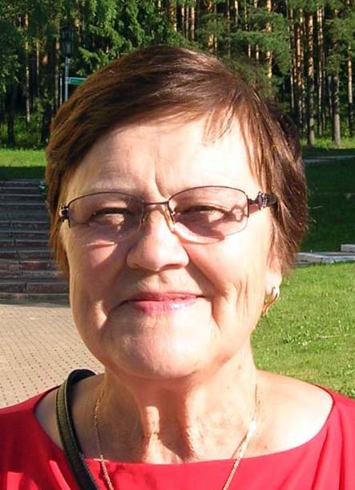

Гришкова (Злобина) Тамара Ильинична (18.08.1951)
.
Возраст: 70
Отец: Злобин Илья Григорьевич (26.07.1916 - 18.12.1995)
Мать: Злобина (Герилович) Мария Ивановна (24.08.1922)
Сестра: Колмогорова (Злобина) Светлана Ильинична (15.07.1943)
Сестра: Милинчук (Злобина) Галина Ильинична (29.04.1946)
Брат: Злобин Сергей Ильич (14.11.1953)
Муж: Гришков Валерий Леонидович (23.02.1949)
Дочь: Зайцева (Гришкова) Юлия Валерьевна (25.07.1974)
Родилась: 18.08.1951. Отец: Злобин Илья Григорьевич. Мать: Злобина (Герилович) Мария Ивановна.
Вышла замуж. Муж: Гришков Валерий Леонидович.
Родилась дочь: Зайцева (Гришкова) Юлия Валерьевна, 25.07.1974. Отец: Гришков Валерий Леонидович.
 . . |